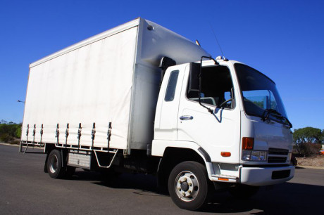

-
Адрес г. Кстово ул Больничная, 24
-
Телефон +7 (904) 920 47 77
-
Часы работы Пн-Пт с 10:00 до 19:00
Хочешь заказать обратный звонок?
Наши цены
Грузовик 1.5 т./до 9 м³
От 14 руб\км

Грузовик 3 т./до 13 м³
От 16 руб\км

Грузовик 5 т./ до 34 м³
От 22 руб\км
О нас
«Дорожный экспресс» – одна из лучших транспортных компаний в Нижнем Новгороде,
которая занимается организацией грузоперевозок по территории РФ.
Она была создана в 2019 году и за годы существования приобрела большую популярность на рынке транспортных услуг
за счет грамотно разработанных логистических схем и профессионализма персонала.
Ежегодно транспортная Компания «Дорожный экспресс» предоставляет комплексные услуги по доставке грузов более 3000 клиентов,
в том числе частным лицам и производственным компаниям.
Наш адрес
г. Кстово ул Больничная, 24